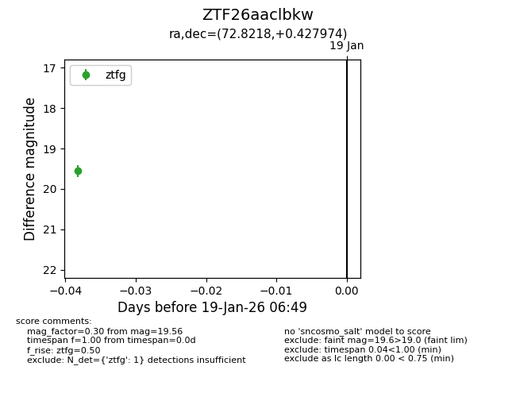
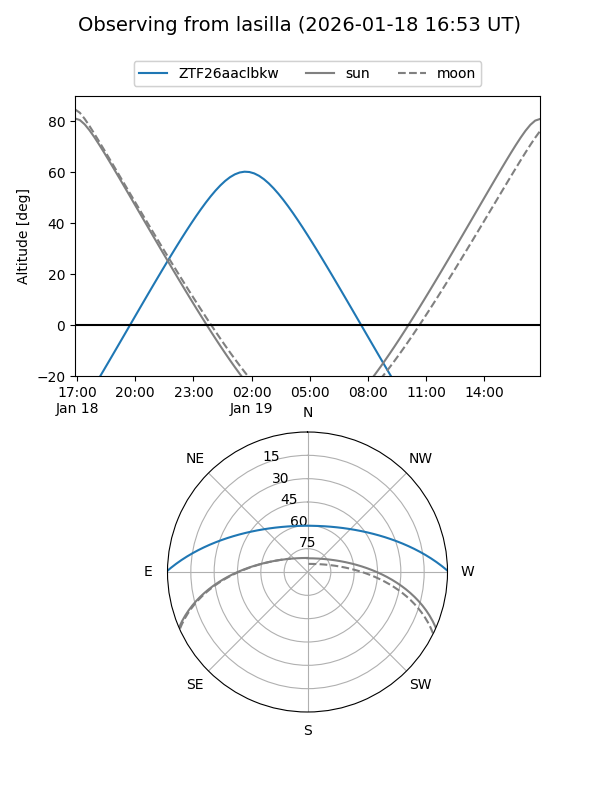
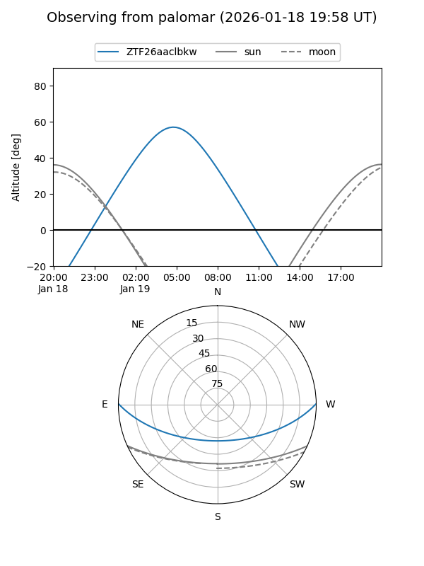

ZTF26aaclbkw
Target ZTF26aaclbkw at 2026-01-19 06:50
Aliases and brokers:
FINK: link
Lasair: link
ALeRCE: link
alt names
ZTF26aaclbkw (ztf,fink_ztf)
Coordinates:
equatorial (ra, dec) = 72.8218,+0.42797
equatorial (HMS+DMS) = 04:51:17.23,+00:25:40.71
galactic (l, b) = (197.7507,-26.23682)
Flags:
Photometry:
last ztfg=19.56
1 ztfg detections
Lightcurve

Visibility


Additional plots